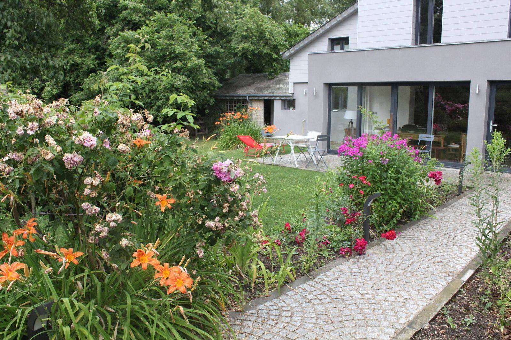
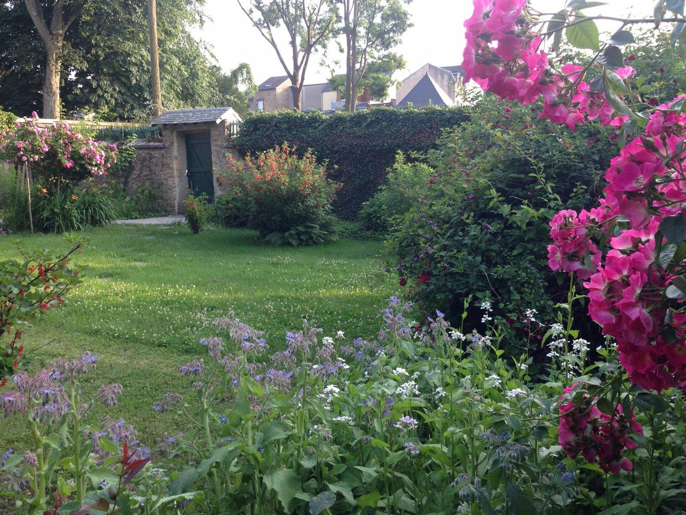
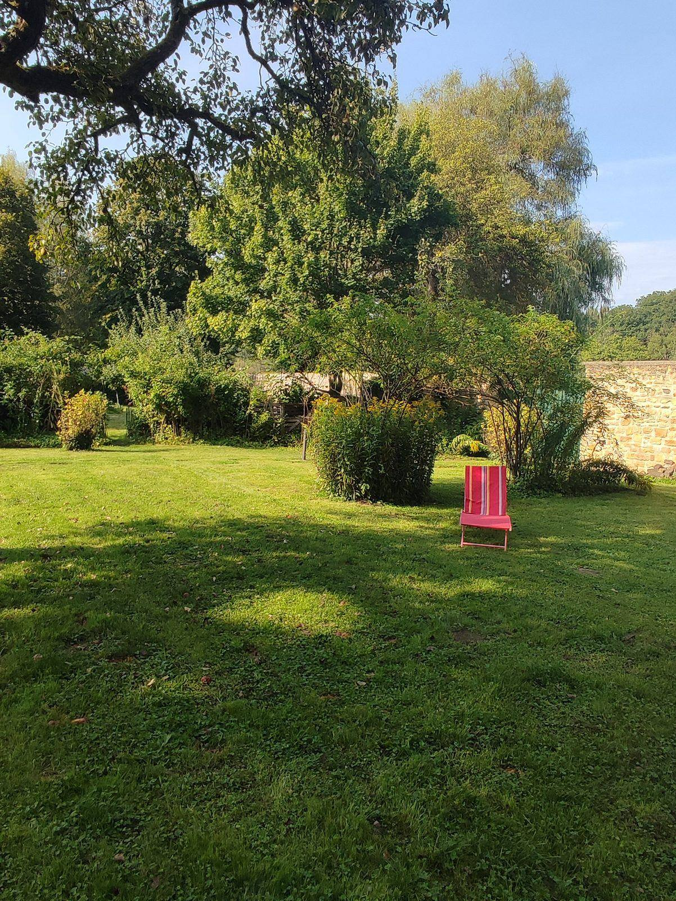
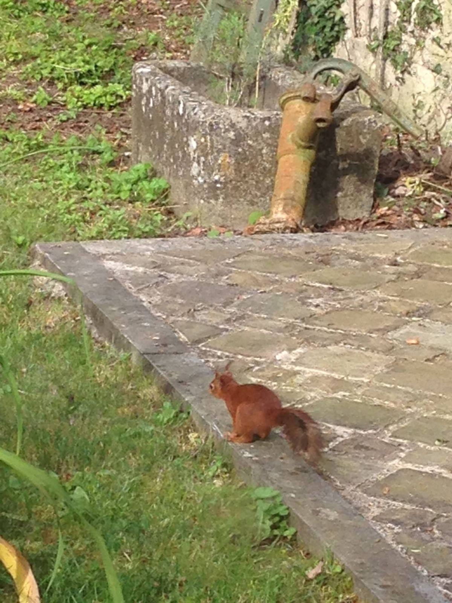
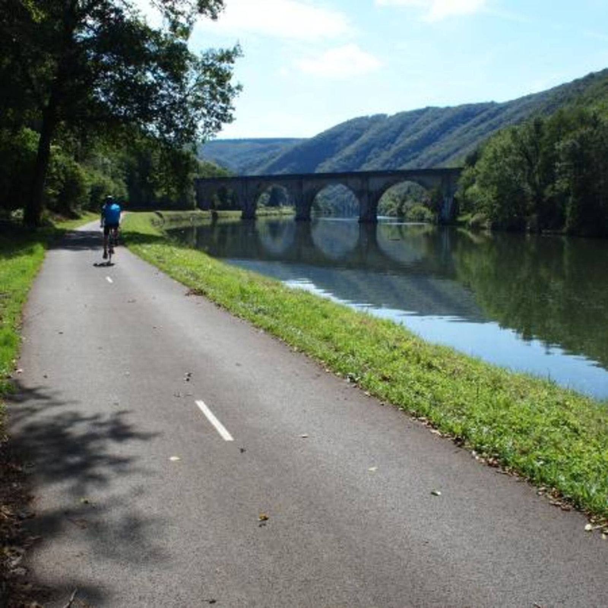
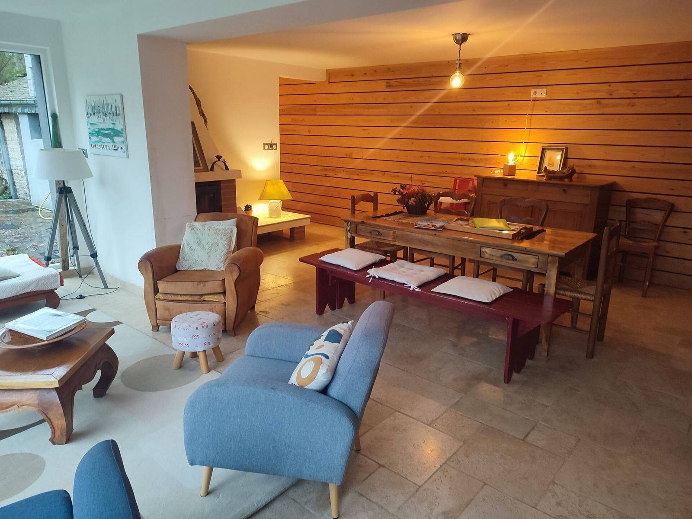
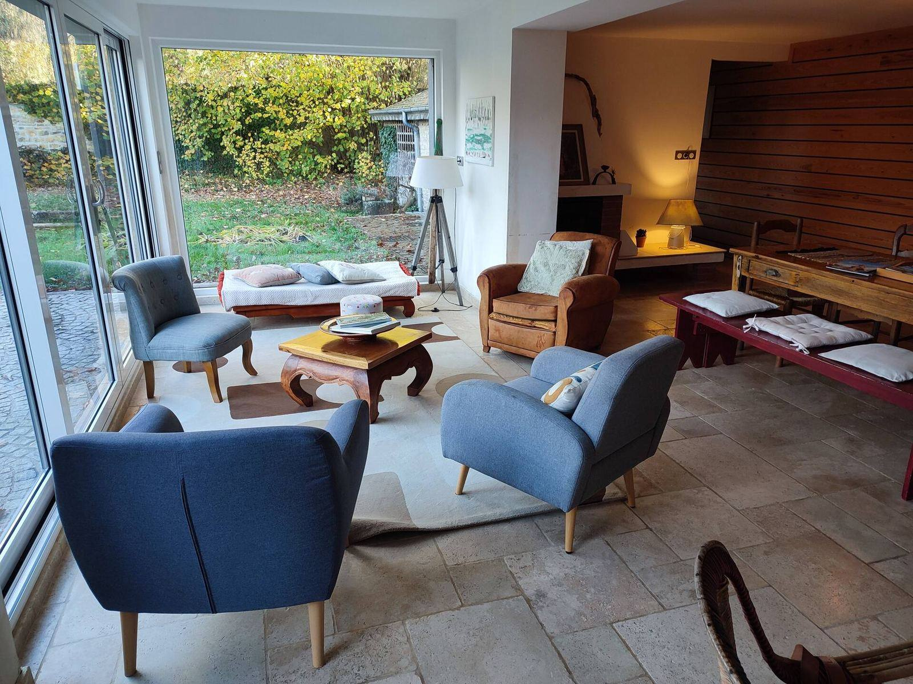
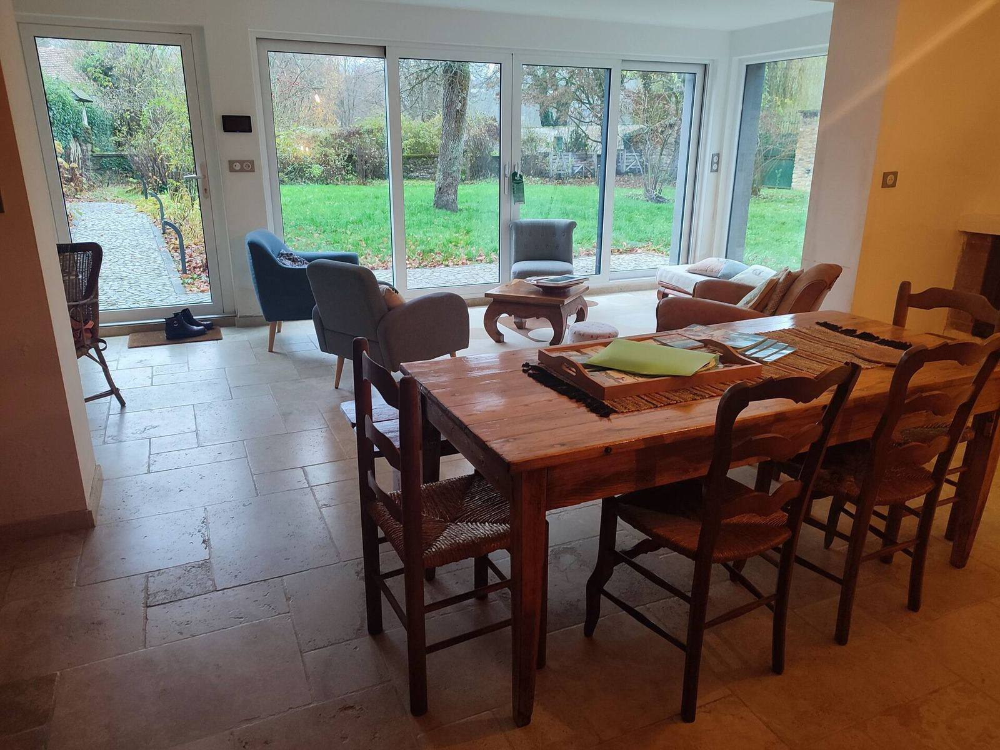
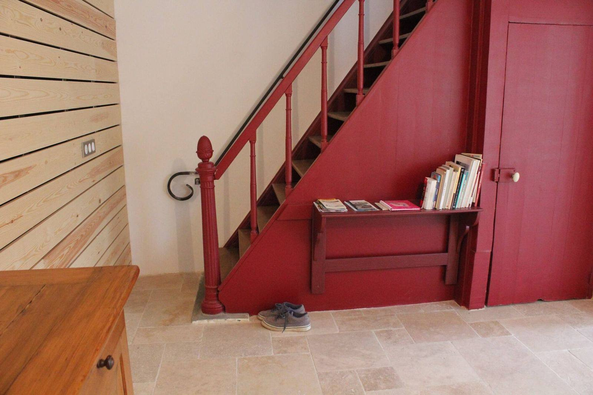
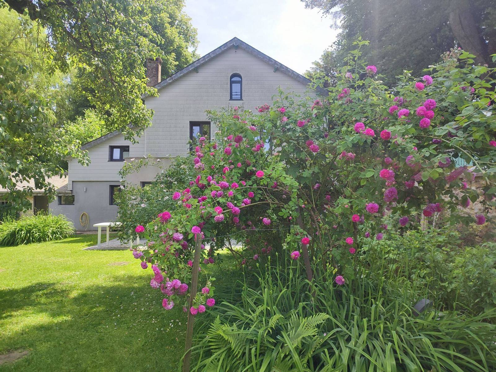

« Le jardin est magnifique en toute saison, et la grande baie vitrée permet d’en profiter même quand il pleut. On y reviendra. »
Charleville-Mézières · Ardennes
Une maison de famille ouverte sur cinq cents mètres carrés de jardin, à deux pas de la Meuse.
Gîte de charme 3 étoiles, entièrement rénové, pour 2 à 5 personnes. À dix minutes à pied de la place Ducale, à deux pas de la Voie Verte Trans-Ardennes.
4,8/5
23 avis Google et 62 avis Airbnb

500 m²
de jardin clos et arboré
2 à 5
personnes, deux chambres
10 min
à pied de la place Ducale
85 avis
4,8/5 sur Google, 4,77/5 sur Airbnb
Le jardin
Cinq cents mètres carrés, clos et fleuris
C’est ce dont on nous parle le plus : sur les soixante-deux commentaires de notre annonce, trente-neuf citent les espaces extérieurs avant toute autre chose. Arboré, fleuri, entièrement clos, avec une terrasse de plain-pied. De quoi prendre le petit-déjeuner dehors, laisser courir les enfants, ou ne rien faire du tout.




L’emplacement
Une rue qui ne mène qu’aux berges
Aucune circulation : la rue Saint-Aubin ne dessert rien d’autre que les maisons et se termine par le chemin qui descend à la Meuse et à la Voie Verte. C’est ce qui explique le calme, et c’est le deuxième motif de satisfaction cité dans nos commentaires.
Le quartier a des airs de village : commerces, pharmacie, médecin, kinésithérapeute, arrêt de bus. Et le centre de Charleville — la place Ducale, ses cafés, son cinéma — est à dix minutes à pied.
De la porte du jardin, on rejoint 85 km de piste cyclable sans voiture, de Charleville à Givet et à la frontière belge.

Votre hôte
Claire
« Je travaille dans le tourisme, alors autant que ça vous serve : je peux vous conseiller les sorties à vélo, les randonnées, les musées, les monuments, les bons restaurants et les marchés de pays, dans la ville comme dans tout le département. »
Nous recevons des voyageurs depuis neuf ans et nous répondons à toutes les demandes, en quelques heures le plus souvent. L’accueil est le troisième sujet le plus cité dans nos commentaires, après le jardin et l’emplacement.
L’arrivée est autonome, par boîte à clé sécurisée, entre 17 h et 20 h. Le départ se fait avant 11 h.
La maison
Rénovée avec soin, ouverte sur le jardin
Une maison indépendante du début du XXe siècle, entièrement rénovée : 70 m², deux chambres, une salle de bain, une cuisine équipée et une cheminée. Le salon donne de plain-pied sur la terrasse par de grandes baies vitrées.




Deux choses à savoir avant de réserver :
les escaliers sont raides, et l’on accède à la salle de bain en traversant la chambre du premier étage. Sans importance en famille, gênant entre adultes qui ne se connaissent pas.
Tout le « bon à savoir » →
Ce qu’en disent nos hôtes
4,8/5 sur Google, 4,77/5 sur Airbnb
23 avis sur Google, 62 sur Airbnb, et un taux de réponse de 100 %.
« Une rue tranquille qui ne mène qu’aux berges, et pourtant le centre-ville à pied. Nous n’avons pas repris la voiture de la semaine. »
« Accueil exceptionnel de Claire, et d’excellents conseils pour découvrir la région. Tout est décoré avec goût, impeccablement propre, literie de qualité. »
Extraits traduits et abrégés à partir des commentaires publiés sur Google et sur Airbnb.
Réserver
Écrivez-nous directement
Dites-nous vos dates et le nombre de personnes : nous vous répondons avec les disponibilités et le tarif, en quelques heures le plus souvent. En direct, vous ne payez aucune commission de plateforme — et nous non plus.